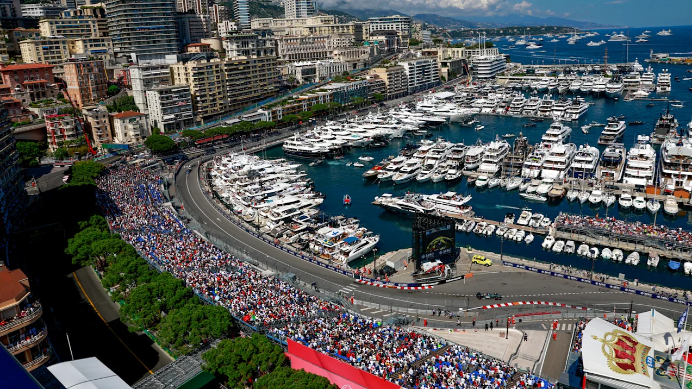
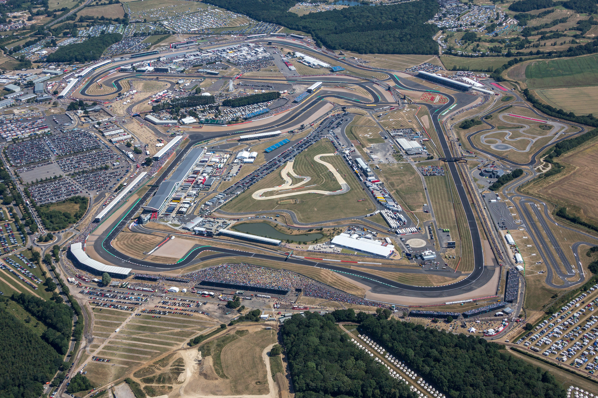
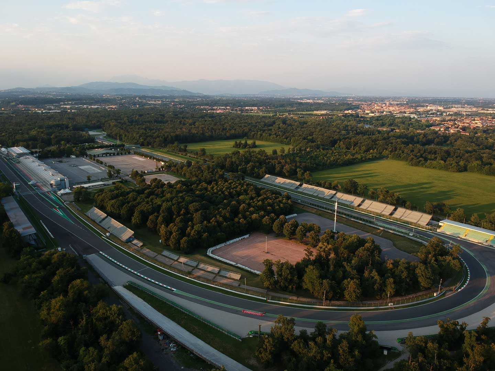
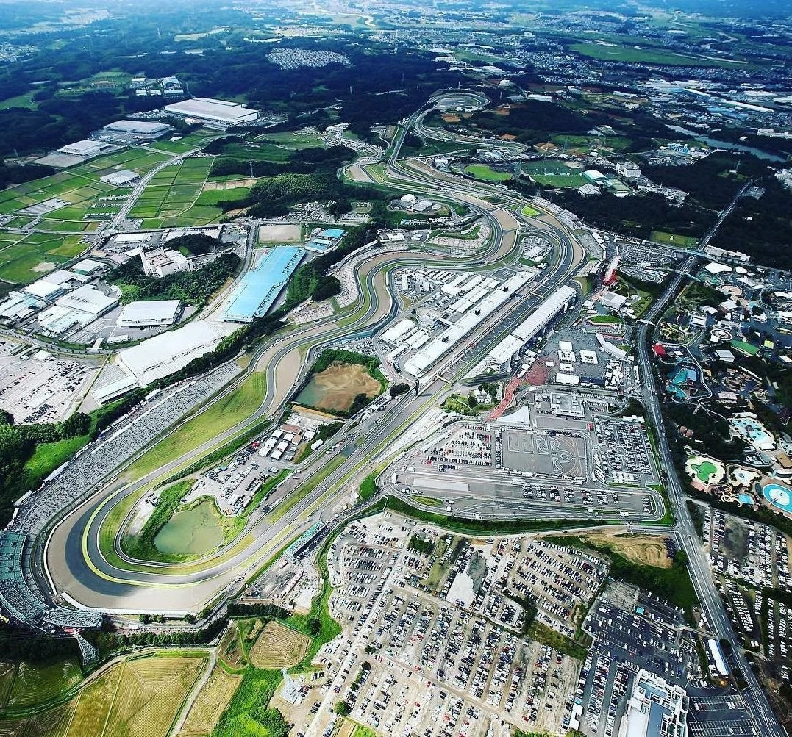
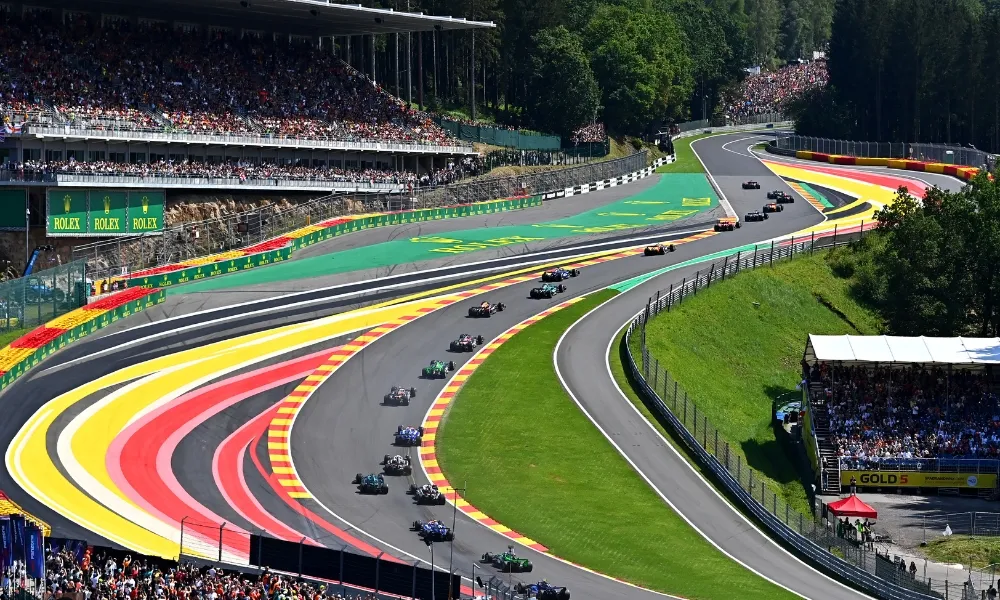

Los escenarios donde la historia de la F1 se escribe

Gran Premio de Mónaco
🇲🇨 Mónaco · Principado de Mónaco
3.337 km
Longitud
78
Vueltas
19
Curvas
El Gran Premio más famoso del mundo. Las estrechas calles del Principado hacen de este el circuito
más difícil y lento del calendario. Adelantar es casi imposible, por lo que la clasificación lo es
todo.

Gran Premio de Gran Bretaña
🇬🇧 Silverstone · Reino Unido
5.891 km
Longitud
52
Vueltas
18
Curvas
El hogar de la Fórmula 1. Silverstone fue sede del primer Gran Premio del mundo en 1950. Sus curvas
de alta velocidad como Maggotts y Becketts son las favoritas de los pilotos.

Gran Premio de Italia
🇮🇹 Monza · Italia
5.793 km
Longitud
53
Vueltas
11
Curvas
Llamado "El Templo de la Velocidad". Monza es el circuito más rápido del calendario gracias a sus
largas rectas. Los tifosi de Ferrari llenan las gradas de rojo cada septiembre.

Gran Premio de Japón
🇯🇵 Suzuka · Japón
5.807 km
Longitud
53
Vueltas
18
Curvas
El favorito de muchos pilotos. Suzuka es el único circuito en figura de 8 del calendario. La curva
130R y el chicane final son un desafío técnico enorme que separa a los buenos de los mejores.

Gran Premio de Bélgica
🇧🇪 Spa-Francorchamps · Bélgica
7.004 km
Longitud
44
Vueltas
19
Curvas
El circuito más largo del calendario. Rodeado de los bosques de las Ardenas belgas, su curva Eau
Rouge / Raidillon es una de las más espectaculares del mundo. El clima puede cambiar radicalmente de
una parte a otra del trazado.